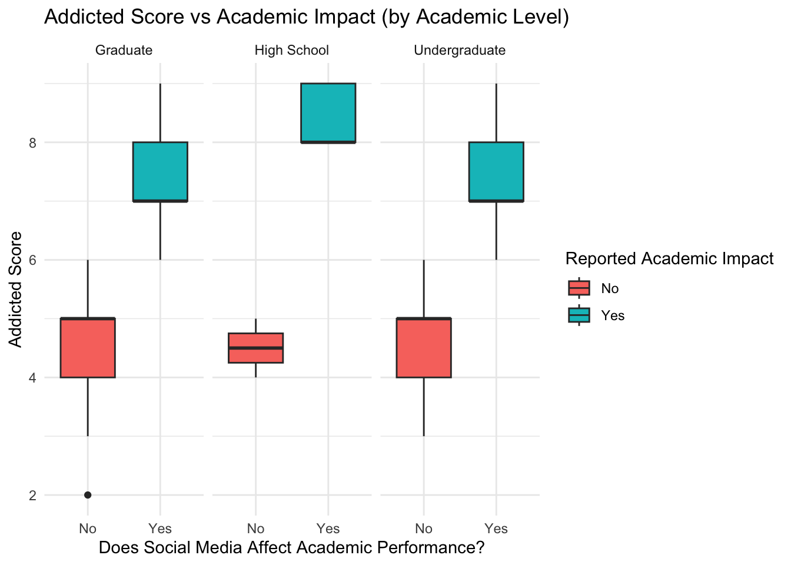

Social media platforms—such as Instagram, TikTok, and YouTube—have become an integral part of students’ lives, shaping their routines, relationships and self-perception.
The use of social media, whether through direct communication or sharing and interacting with content, plays an inherently social role in students’ lives. As such, social media usage may have important implications for increasing connection with individuals and groups, offering young people a forum to find community and express themselves (Winstone et al. 2021).
However, rising concerns from the U.S. Surgeon General and multiple research studies have drawn attention to the negative impact of social media on the well-being of young people, and that excessive use of social media—often measured by screen time—seems to displace essential activities such as sleep and exercise (Times 2023). The attorneys general of dozens of US states sued Instagram and its parent company Meta over their impact on young users, accusing them of contributing to a youth mental health crisis through the addictive nature of their social media platforms (Guardian 2023). These discussions reveal the dual-edged role of social media–it can foster connection, yet also introduce risks that may affect students’ health, behavior, and academic life.
This study focuses mainly on “How social media addiction affects students in various parts of their lives”. In this analysis, students–mostly undergraduates and graduates are considered to explore the impact of social media addiction on academic performance and interpersonal relationships, as well as how time spent on social media relates to mental health. Our findings could not only inform further research into how these addiction-driven trends are interconnected, but also potentially support governments and educators in developing strategies to promote student well-being.
Methodology
Dataset Description
library(tidyverse)
── Attaching core tidyverse packages ──────────────────────── tidyverse 2.0.0 ──
✔ dplyr 1.1.4 ✔ readr 2.1.5
✔ forcats 1.0.0 ✔ stringr 1.5.1
✔ ggplot2 3.5.2 ✔ tibble 3.2.1
✔ lubridate 1.9.4 ✔ tidyr 1.3.1
✔ purrr 1.0.4
── Conflicts ────────────────────────────────────────── tidyverse_conflicts() ──
✖ dplyr::filter() masks stats::filter()
✖ dplyr::lag() masks stats::lag()
ℹ Use the conflicted package (<http://conflicted.r-lib.org/>) to force all conflicts to become errors
library(dplyr)library(readr)
addiction <-read.csv("data/Students Social Media Addiction.csv")
The dataset was obtained from Kaggle (Shamim 2023) and contains 705 observations of student self-reports on social media usage and its effects. Each row represents a unique student, and the dataset includes 13 variables such as average daily usage hours, addiction score (1–10), academic performance impact, sleep hours, mental health score, and most used social media platform.
head(addiction,2)
Student_ID Age Gender Academic_Level Country Avg_Daily_Usage_Hours
1 1 19 Female Undergraduate Bangladesh 5.2
2 2 22 Male Graduate India 2.1
Most_Used_Platform Affects_Academic_Performance Sleep_Hours_Per_Night
1 Instagram Yes 6.5
2 Twitter No 7.5
Mental_Health_Score Relationship_Status Conflicts_Over_Social_Media
1 6 In Relationship 3
2 8 Single 0
Addicted_Score
1 8
2 3
Table 1 shows the missing values across all variables. A summary table was generated to count missing entries per column. As shown in Table X, all key variables such as addiction score, academic performance impact, sleep hours, and mental health score had no missing values, indicating a complete dataset suitable for analysis without imputation.
Figure 1 illustrates the distribution of self-reported addiction scores (1–10) among all participants. The majority of students fall in the 6–8 range, with the highest bar at 6–7, indicating a sample skewed toward moderate-to-high addiction levels. Scores below 4 are comparatively rare. This left-skewed distribution confirms that Addicted_Score is a meaningful and varied independent variable for our subsequent descriptive analyses.
Result
ggplot(addiction, aes(x =factor(Addicted_Score), fill =factor(Conflicts_Over_Social_Media))) +geom_bar(position ="fill") +labs(title ="Interpersonal Conflicts by Addiction Score",x ="Addicted Score", y ="Proportion",fill ="Conflicts Occurred?") +theme_minimal() +theme(axis.text.x =element_text(angle =45, hjust =1))
Figure 2: Interpersonal Conflicts by Addiction Score
Interpersonal Conflicts Figure 2: The stacked bar chart demonstrates a strong positive correlation between addiction scores and interpersonal conflicts. Students with lower addiction scores (1-3) experience minimal conflicts, while those with higher scores (6-9) show dramatically increased conflict frequency, with some experiencing up to 5 conflicts.
Figure 3: Interpersonal Conflicts by Addiction Score
Mental Health Correlation Figure 3: The scatter plot illustrates a negative relationship between daily usage hours and mental health scores. As average daily usage increases from 2 to 8 hours, mental health scores decline from approximately 8.5 to 3.5, indicating deteriorating psychological well-being.
Table 2: Average Usage Hours and Addiction Score by Platform
Platform-Specific Patterns Table 2: WhatsApp users show both the highest average usage hours (6.48) and addiction scores (7.46), followed closely by TikTok users. Traditional platforms like Facebook and VKontakte demonstrate lower usage and addiction metrics. These findings support the research hypothesis that excessive social media engagement negatively impacts academic performance, interpersonal relationships, and mental health across student populations.
ggplot(addiction, aes(x = Affects_Academic_Performance, y = Addicted_Score, fill = Affects_Academic_Performance)) +geom_boxplot() +facet_wrap(~ Academic_Level) +labs(title ="Addicted Score vs Academic Impact (by Academic Level)",x ="Does Social Media Affect Academic Performance?",y ="Addicted Score") +theme_minimal()

Figure 4: Addicted Score vs Academic Impact (by Academic Level)
Based on the analysis of social media addiction’s impact on students, several key findings emerge from the visualizations: Academic Performance Impact Figure 4: The boxplot reveals a clear pattern where students reporting academic performance effects consistently show higher addiction scores (6-8 range) compared to those without reported effects (4-5 range). This relationship holds across all academic levels - graduate, high school, and undergraduate students.
Conclusion & Recommendations
The analysis clearly shows that social media significantly affects students in their daily lives—academically, socially, and mentally. Students with higher addiction scores consistently reported a negative impact on academic performance, regardless of their academic level. Similarly, those with high addiction levels experienced more interpersonal conflicts, indicating that excessive social media use may strain relationships.
A strong negative correlation was observed between daily usage hours and mental health scores—students spending more time on social media reported poorer mental well-being. Platform-specific trends showed that WhatsApp, TikTok, and Snapchat users had the highest usage and addiction scores, suggesting these platforms may contribute more to daily disruptions.
These findings confirm that heavy social media engagement can interfere with students’ focus, emotional balance, and relationships, making it a key factor in their overall daily life experience.
Here are some recommendations:
Establish time limits for social media engagement can help prevent excessive scrolling, particularly during study sessions and before sleep. Apps with built-in timers or digital well-being features can be useful for this.
Schedule study sessions and coursework ahead of social media browsing ensures that academic performance isn’t compromised due to distraction.
Shift focus from passive content consumption to meaningful online interactions, such as educational discussions or networking.
Take breaks or limit exposure to platforms associated with distress to maintain psychological well-being.
Strengthen offline relationships to reduce dependency on digital interactions and minimize conflicts.
Acknowledge the impact of social media addiction to make informed choices that support academic success and mental health.
Use social media as a tool for enrichment rather than one that diminishes personal growth and stability.
Institutions like schools and universities should provide mental health resources and counseling services that address issues related to digital overuse and stress.
Winstone, Lizzy, Becky Mars, Claire M. A. Haworth, and Judi Kidger. 2021. “Social Media Use and Social Connectedness Among Adolescents in the United Kingdom: A Qualitative Exploration of Displacement and Stimulation.”BMC Public Health 21: 1736. https://doi.org/10.1186/s12889-021-11802-9.